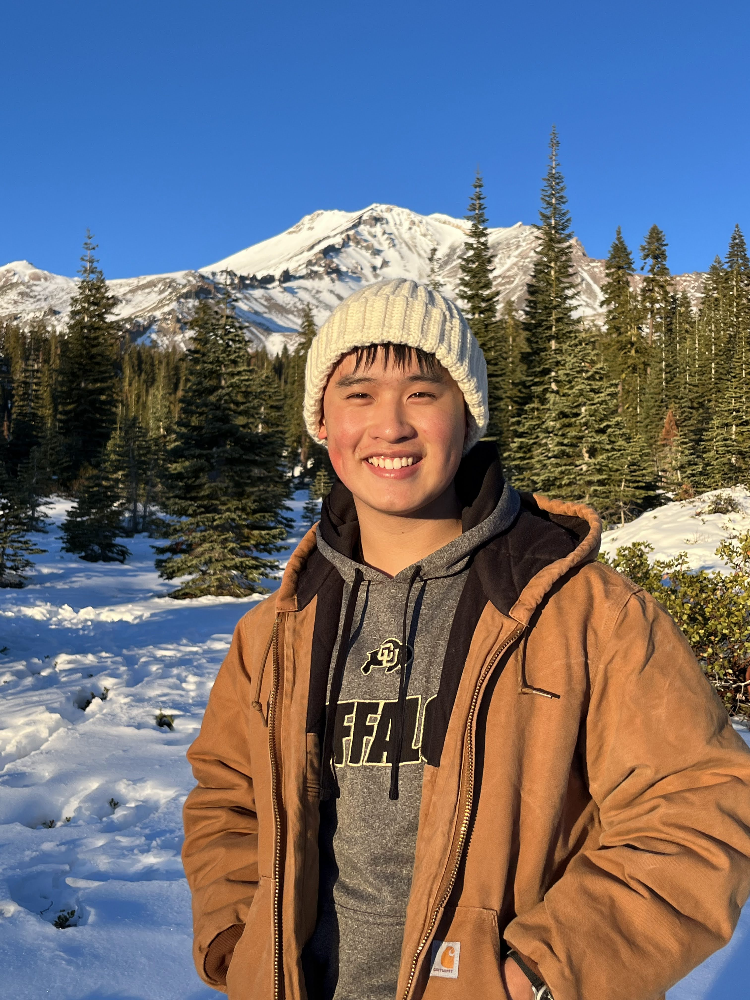

I specialize in process automation, agentic workflows, and software/data integration. I design backend systems that reduce manual work. B.S. in Software Engineering, San José State University, May 2026.
I’m currently studying Software Engineering at San José State University and I graduate May 2026. I specialize in process automation with UiPath, Boomi,
Python, and Zapier. My other technical skills include backend development (Java, Spring Boot), database management (SQL Server, MySQL), API integration (REST, GraphQL),
and cloud platforms (AWS). My frontend tech stack includes Webflow, WordPress, React, HTML, and CSS.
Regarding my work experience, I currently intern at DAAP Finance Partners, an accounting and finance startup based in the SF Bay Area as a Business Systems &
Process Analyst Intern, where I also interned during Spring 2025 which I am currently working on automating financial data pipelines, real-time client reporting dashboards,
and web development. In Summer 2025, I interned at Nidaan Systems in Milpitas as a Junior Solutions Analyst Intern
where I worked with the cloud integration platform Boomi designing software integration workflows, on-prem SQL to cloud migrations, and web development. Before
that, I interned at Voter.vote working under the Match.com founder building in Python/Django a user search algorithm across SQL databases. I was also
an IT intern at Mekong Community Center from August 2023 to August 2024 doing web development.
Time to talk about what I love to do outside of work/school, yay! First and foremost, I love love love fishing. I have been fishing my whole life and I am absolutely
infatuated with fish. My favorite spot to fish is saltwater fishing in Santa Cruz. My favorite fish is the lingcod, an absolutely tough fighter as well as a beautiful fish.
I love rockfish, halibut, and surf perch fishing as well. Sometimes I freshwater fish at the local ponds in the South Bay Area when I don't want to drive over the 17, but nothing
beats saltwater fishing. Additionally, I love to crab. I crab for dungeness crab in SF during the season, and in the offseason I love love love crabbing for rock crab. I love
coastal foraging as well, I coastal forage along the Half Moon Bay coastline for mussels, seaweed, uni, eels, and other critters that live in the intertidal zone.
I am passionate about sustainable seafood and harvesting your own food from the coast, as it connects you to the food you eat and brings a greater appreciation for the
delicate and beautiful marine ecosystem that the California coast has to offer. I am currently learning how to surf as well, as surfing brings me close to the amazing
Santa Cruz coastline and allows me to immerse myself in the great blue Pacific ocean.
When I am not in the sea doing fishy things, I play tennis as well as pickup soccer occasionally if my ankle isn't bothering me. I lift about 4-5 times a week as well, lifting
has always been a passion of mine. I run in my neighborhood sometimes when I feel like it to boost my cardio health and to make myself feel better about all the excess food I love to eat.
I enjoy cooking and my goal is to become a good chef. I enjoy eating organic high quality produce, seafood, and meat, preferably local products that are sustainable, humane, and pasture raised.
I play jazz/blues/rock and roll piano, I have been playing since I was 5 years old classically, but stopped playing classical music around the age of 13 to self-teach myself
music that I am passionate about. I draw inspiration from the Beatles, Neil Young, Chet Baker, Eagles, The Beach Boys and newer heavier artists in the pop punk/emo genre excite me.
Above all, I am a people person who enjoys connecting with others! Feel free to contact me at minstonnguyen
at gmail dot com or my
LinkedIn
- I would absolutely love to chat!